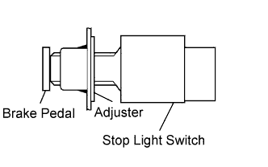
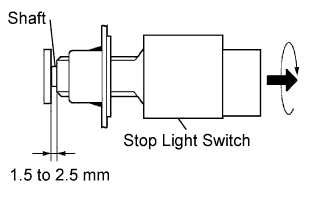

STOP LIGHT SWITCH > INSTALLATION |
| 1. INSTALL STOP LIGHT SWITCH MOUNTING ADJUSTER |
Install a stop light switch mounting adjuster to the pedal support.
| 2. INSTALL STOP LIGHT SWITCH |
 |
Insert the stop light switch to the adjuster until it just touches the brake pedal.
 |
Turn the stop light switch quarter in clockwise to install it.
Check the stop light switch clearance.
Connect the wire harness clamp to the pedal support.
Connect the connector to the stop light switch.